|
MPLAB® Harmony Graphics Suite
|
|
MPLAB® Harmony Graphics Suite
|
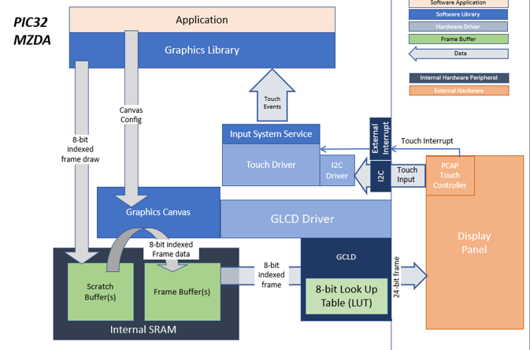
This application demonstrates multi-layer, WVGA graphics using internal SRAM only without the need for DDR memory. The library uses 8-bit index frame data to draw on a scratch buffer in internal SRAM. This scratch buffer data is written into the frame buffers to complete the layer frames which are also in 8-bit index format. The layer frames are read by the GLCD, converted into 24-bit frames using a color Look-Up Table (LUT) and then sent to the display panel. The application code uses the Graphics Canvas library to overlay of the needles using the GLCD layers. User touch input on the display panel is received thru the PCAP capacitive touch controller, which sends a notification to the Touch Input Driver. The Touch Input Driver reads the touch information over I2C and sends the touch event to the Graphics Library thru the Input System Service. The needles are rotated based on the location of the touch events on the screen.
User touch input on the display panel is received thru the PCAP capacitive touch controller, which sends a notification to the Touch Input Driver. The Touch Input Driver reads the touch information over I2C and sends the touch event to the Graphics Library thru the Input System Service.
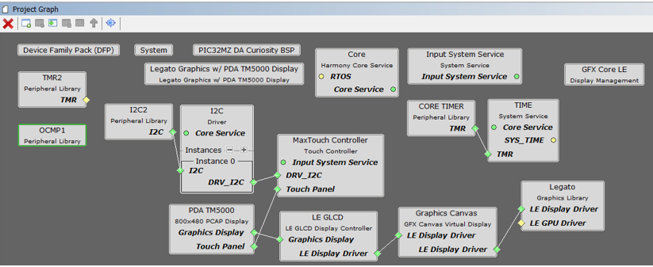
Adding the PIC32MZ DA TM5000 and Legato Graphics w/ MXT Curiosity Pro Display Graphics Template component into the project graph will automatically add the components needed for a graphics project and resolve their dependencies. It will also configure the pins needed to drive the external peripherals like the display.
Graphics Canvas 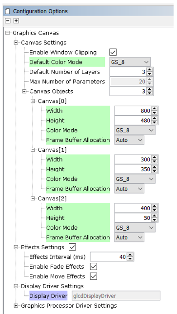
Graphics Canvas component is configured with 3 canvas objects to reference the following frames: Background Frame, Information Page, Weather/Time Banner
Each canvas object is sized based on the resolution of the frame
The Color Mode for each canvas object is also set to 8-bit (GS_8)
Graphics Canvas 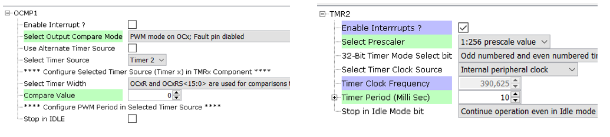
The OCMP1 and TMR2 components are added into the project for backlight control and configured as shown. Using the pin manager, pin RD0 is set to OC1 function so that it’s driven as a PWM signal.
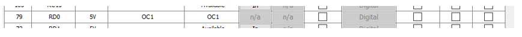
Pin RD0 is set to OC1 function to generate the PWM backlight signal
The parent directory for this application is gfx/apps/legato_climate_control. To build this application, use MPLAB X IDE to open the gfx/apps/legato_climate_control/firmware/legato_cc_mzda_cu_tm5000.X project file.
The following table lists configuration properties:
| Project Name | BSP Used | Graphics Template Used | Description |
|---|---|---|---|
| legato_cc_mzda_cu_tm5000.X | PIC32MZ DA Curiosity 2.0 | Legato Graphics w/ PDA TM5000 Display | PIC32MZ DA Curiosity 2.0 with 24bit GFX Interface and 5" WVGA PCAP Touch display |
**_NOTE:_** This application may contain custom code that is marked by the comments // START OF CUSTOM CODE... and // END OF CUSTOM CODE. When using the MPLAB Harmony Configurator to regenerate the application code, use the "ALL" merging strategy and do not remove or replace the custom code.
The final setup should be:
Configure the hardware as follows:
The final hardware setup should be:
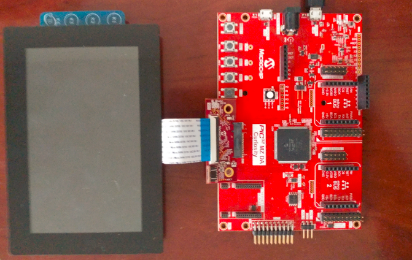
The demo first boots to a splash screen and then to the main screen. The Weather banner on the top left and ‘Info Page’ panel on the right will also slide into frame.
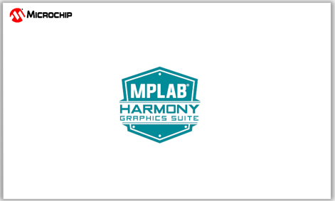
The demo will automatically transition to the main screen.
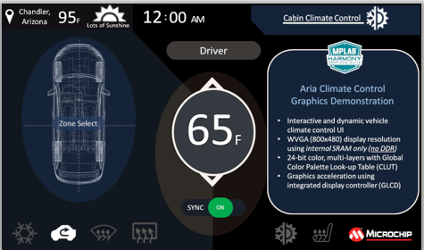
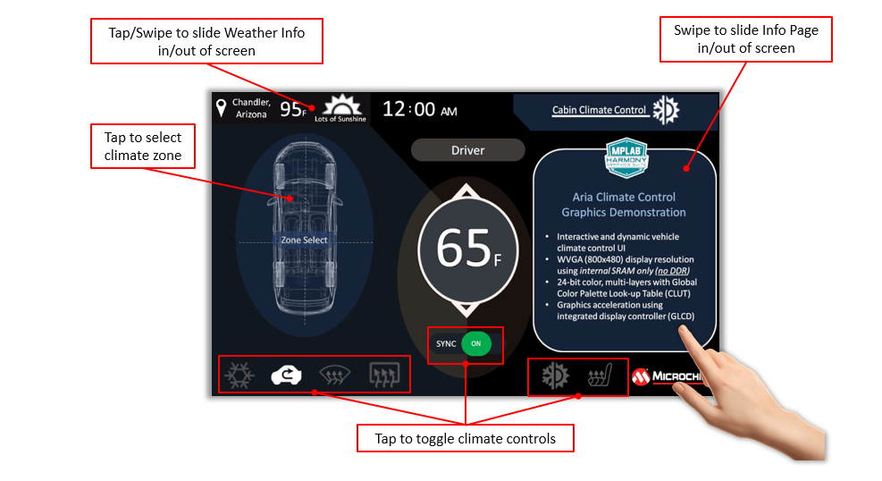
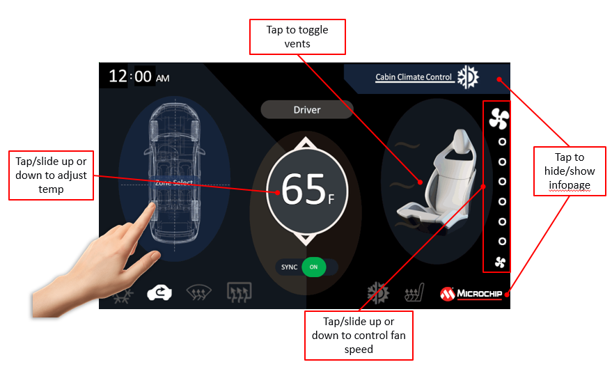
This image compression technique is applied to the frame buffer and allows a WVGA frame to fit into the PIC32MZ DA Internal SRAM (640kB).
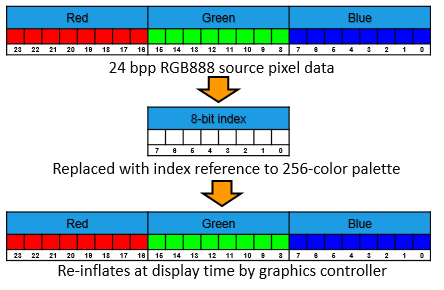
Indexed Color in Practice
Global Palette Support in MHGS and PIC32MZ DA MCU
Tradeoffs/Solutions
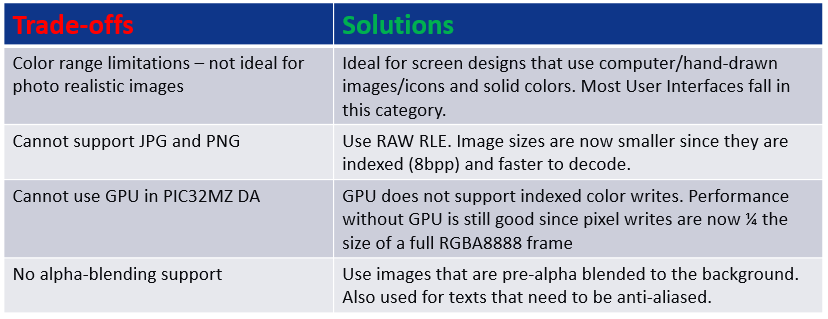
The GLCD display controller supports 3 layers which are used to accelerate graphics features like the sliding panels
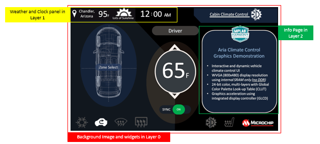
How can I fit a 3-layer WVGA design in the 640kB internal SRAM?
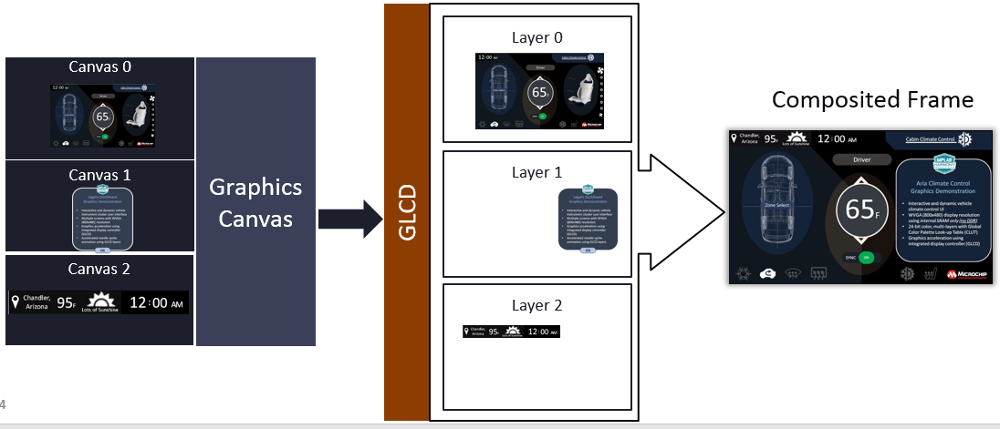
Frame buffers are single-buffered, yet screen tearing is minimal.
How is this achieved?
 1.8.18
1.8.18